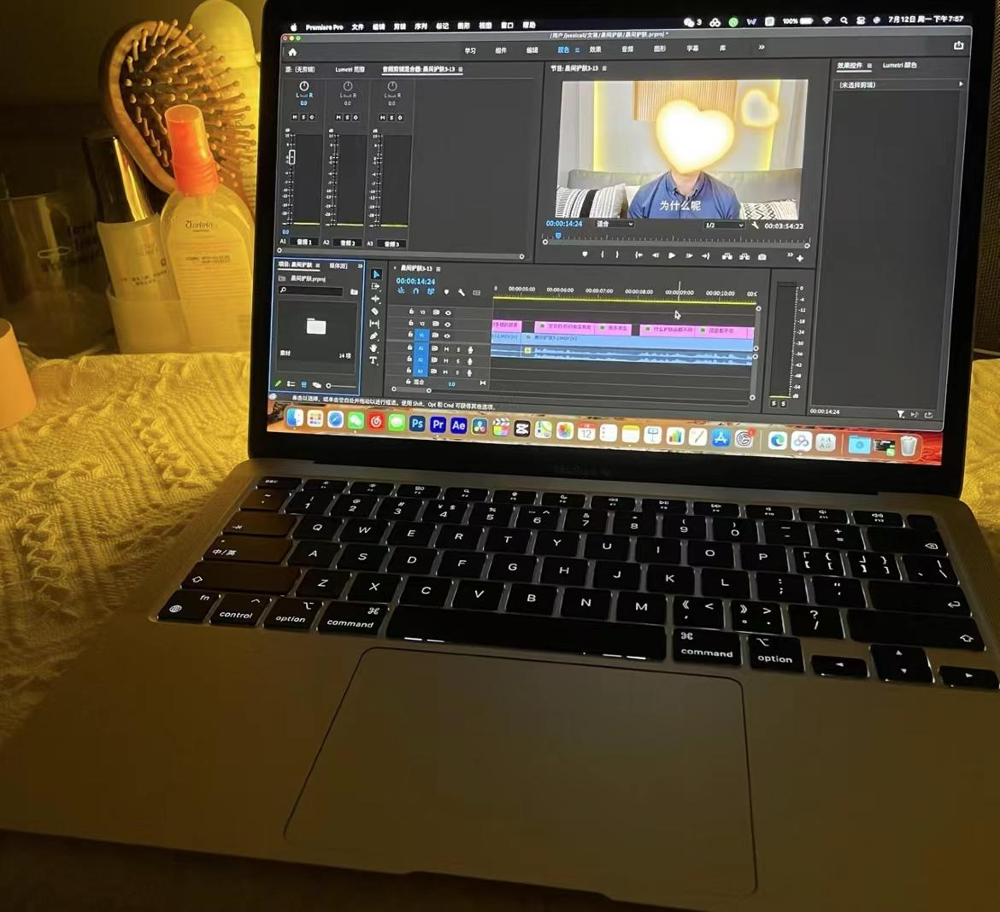

无论是视频还是音频，我都能巧妙地将其拼接、裁剪，让内容更加流畅、精彩。我擅长运用各种剪辑软件，能够根据不同的需求，调整节奏、添加特效，让作品更具吸引力。这项技能不仅让我在学习和工作中游刃有余，更让我在创作过程中享受到了无尽的乐趣
剪辑(Film editing)，即将影片制作中所拍摄的大量素材，经过选择、取舍、分解与组接，最终完成一个连贯流畅、含义明确、主题鲜明并有艺术感染力的作品。从美国导演格里菲斯开始，采用了分镜头拍摄的方法，然后再把这些镜头组接起来，因而产生了剪辑艺术
剪字五行为金，辑字五行为金， 名字金金组合，两金比和，金旺。这种组合的人性格刚强，正义感强，有钢铁般的意志。其人意志坚定，有突破万难之势，但耐性不佳，若能修身养性，稳健发展，则可以开创一番属于自己的事业。 名字仅适合喜用神为金或五行缺金的人来起名。